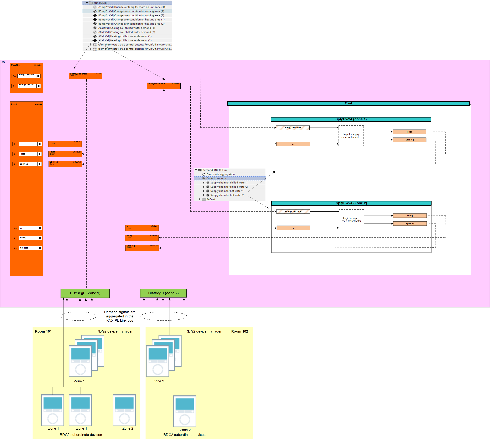
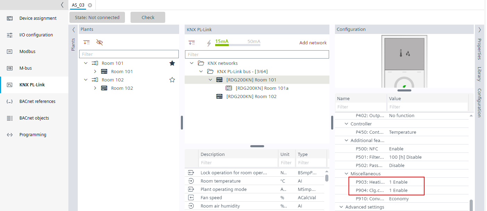
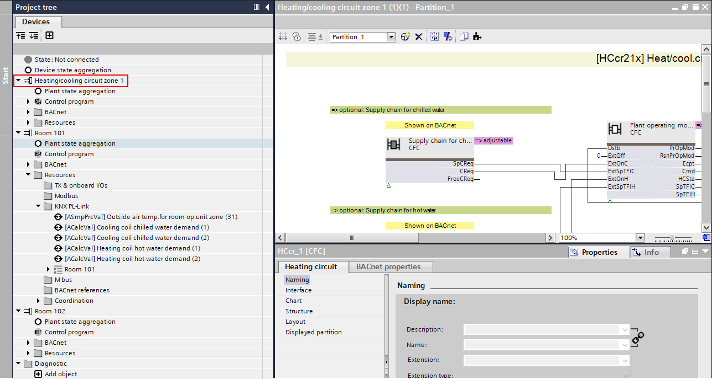
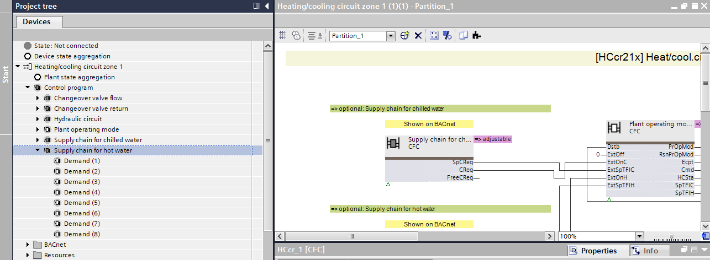
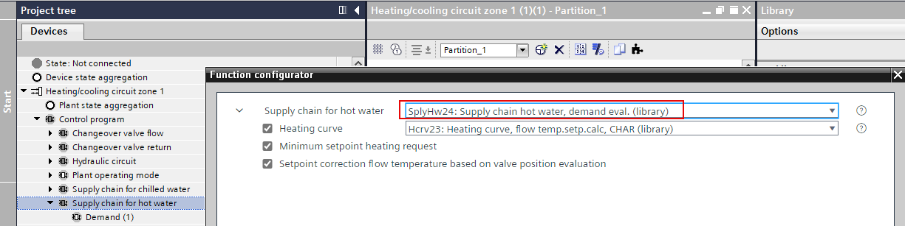
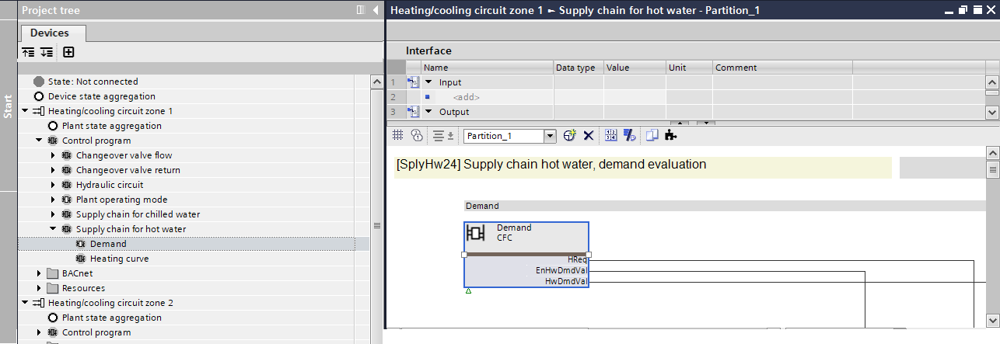
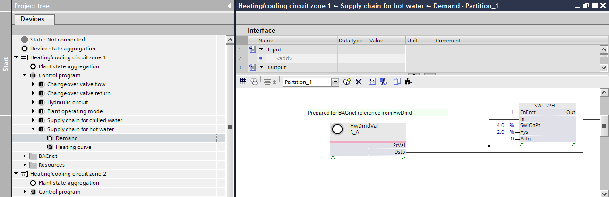
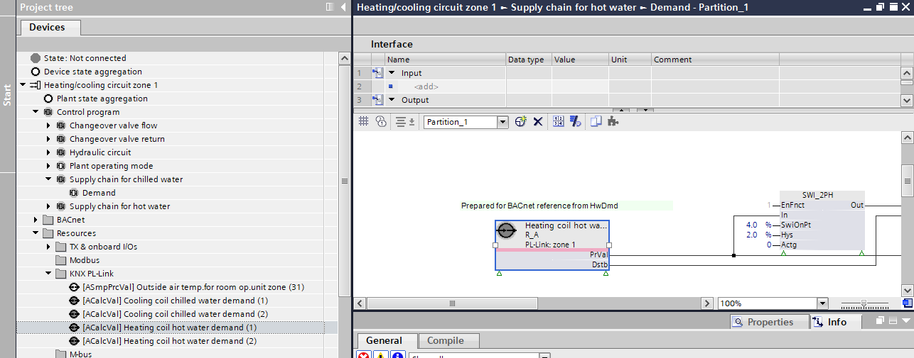

根据加热/cooling 需求调整RDG2 设备图表
加热和冷却需求信号聚集在 KNX PL-Link 总线本身上。考虑配置为属于此区域的所有 RDG2s （经理和下属）的值。
Configuring the RDG2 heating/cooling coil demand with zones
为了与主站进行数据交换，每个区域的相应数据点必须添加到控制程序中。对于这种数据交换，该库提供了匹配的程序块 SplyHW24 和 SplyChw24。
[SplyHw24] Supply chain hot water, demand evaluation
[SplyChw24] Supply chain chilled water, demand evaluation

Create heating/cooling group
- The aggregation function is defined for each signal type and zones.
Defining the aggregation of the demand signal
- Go to the Programming editor.
- Select the Library tab.
- Select a plant, for example, Plants > Nested > [HCcr21x] Heat/cool circ.
- Drag the plant to Add plant.
- The plant is added to the Project tree.

- Create a heating group for each zone.
Replace the heating/cooling demand control program SplyHW23/SplyChw23 with SplyHW24/SplyChw24
- In the Project tree, select the [Heating/cooling circuit zone 1]
 .
. - Select Control program > Supply chain for hot water.

- Right-click and select Function configurator.

- The Function configurator dialog box opens.
- Do the following:
- In the Supply chain for hot water drop-down list, select SplyHw24.

- Select
 help to read the information about this function.
help to read the information about this function.
- Select the required functions .
- Click OK.
- The SplyHW23 is replaced with the SplyHW24.
- Select Control program > Supply chain for hot water > Demand.
- Right-click and select Show in program.
- Double-click the Demand block.

- The sub-chart opens.

- Select [Heating/cooling circuit zone 1] > Resources > KNX PL-Link > [ACalcVal] Heating coil hot water demand (1).
- Drag the [ACalcVal] Heating coil hot water demand (1) to the HwDmdVal xFB.

- Repeat these steps for all heating demands to the corresponding heating circuit.
- Repeat these steps for all cooling demands to the corresponding cooling circuit.
